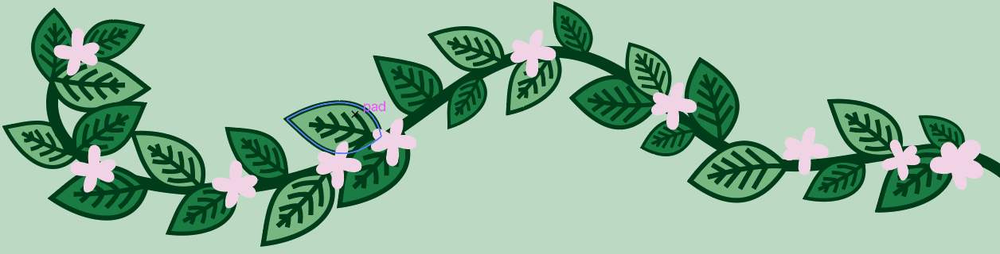

Welkom bij pandjes in de plantjes! Ik ben ervan overtuigt dat een drukke stad als Amsterdam wel wat extra groen kan gebruiken. Groene gevels zijn daar de oplossing voor! Ze fleuren de straten op en geven de stad een unieke uitstraling waar iedereen van kan genieten. Groene gevels maken Amsterdam niet alleen groener, maar ook mooier en gezelliger!
MEER INFO
Wil je meer weten over groene gevels? lees het hier!
ZELF AANPAKKEN
Lees hier hoe jij je eigen groene gevel kan maken!